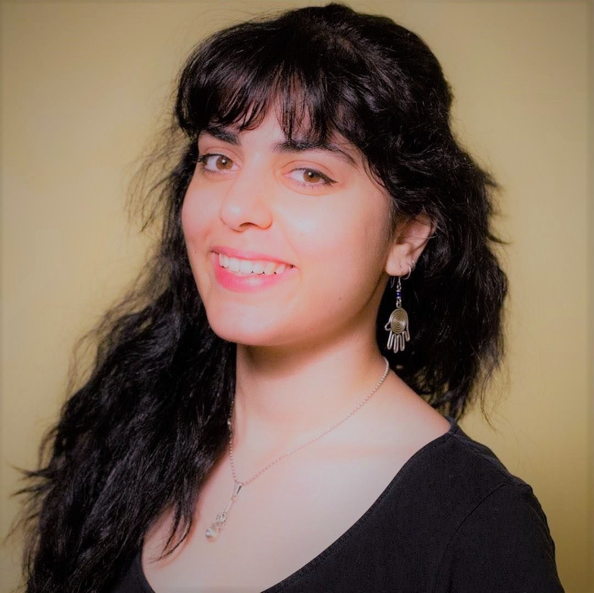

<!DOCTYPE hmtl>
<hmtl>

    <head>
        <link rel="stylesheet" type="text/css" href="h1 {.css">
        <!-- Add icon library -->
        <link rel="stylesheet" href="https://cdnjs.cloudflare.com/ajax/libs/font-awesome/4.7.0/css/font-awesome.min.css">

        <title>Tania Yeroman's Personal Profile</title>
    </head>
    <main>

        <body>
            <nav>
                <div class="navbar">
                    <a href=#>About</a>

                    <a href=#>Experience</a>

                    <a href=#>Contact</a>

                    <a href=#>Home<a/>
                </div>
            </nav>
            <h1>Tania Yeromiyan</h1>

            

                    <h2> Tania Yeromiyan,28 </h2>
                    <div class="flex.container-socials">
                    
                        
                            <a href="https://github.com/TaniaY21" class="fa fa-github"></a>


                    <a href="https://www.linkedin.com/in/taniay2332" class="fa fa-linkedin"></a>


                    <a href="https://www.instagram.com/taniay93/" class="fa fa-instagram"></a>


                    <a href="#" class="fa fa-envelope"></a>

                </div>


                <div class="flex-container">
                    <p>Tania applied to join the part time School of Code bootcamp for support and guidance in her learning journey. She felt that it was important to be part of a coding community for mutual support and encouragement.<br> Tania is currently
                        working as an admin manager for a Chinese language institute in southern China.<br> Once the course is over she is planning to Get a job in tech, and would like to move back to China or Spain eventually.<br> In 5 years from now
                        Tanias ideal life would be her living in Taipei or Montreal as a developer. She would also like to be working remotely and traveling the world<br> Completing the SOC bootcamp she would love to achieve a career change, to develop
                        new skills and confidence.Tania would like to gain experience working with a big team.<br> She manages her time and learning schedul by creating To do lists and priority lists and using the pomodoro timer for focused periods of
                        study. <br> For leisure Tania enjoys reading, nail art, weight lifting, watching new movies and tv shows on Netflix and YouTube. She loves to Partyyyyy!!! <br>
                    </p>
                </div>

        </body>
    </main>
    </div>
    <footer> Jade Phipps 2021</footer>
    </div>
</hmtl>